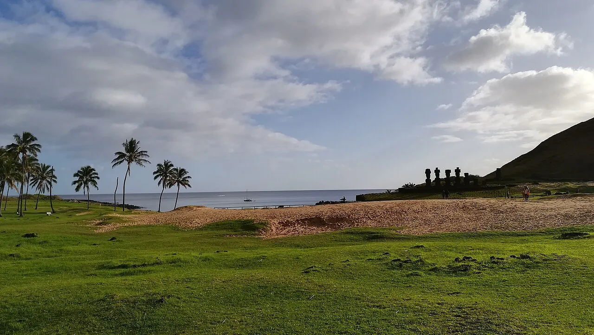

Anakena
Rapa Nui, Chili · baignade, snorkeling

Plage de sable corallien bordée de cocotiers et de moaïs, au nord de l’île de Pâques. L’une des rares plages de l’île.
- Lieu
- Rapa Nui, Chili
- Niveau
- Débutant
- Activités
- baignade, snorkeling
- Type d'eau
- Mer / océan
- Coordonnées
- -27.07, -109.32 (position approximative du secteur)
Dangers à connaître
- Houle forte certains jours.
- Site archéologique protégé.
Le conseil d'Ocean Buddy
Les moaïs sont sacrés : ne les touche pas et reste sur les chemins.
Ouvrir dans Ocean Buddy Télécharger sur l'App Store
Source : Fiche Ocean Buddy · septembre 2026 · à vérifier localement.